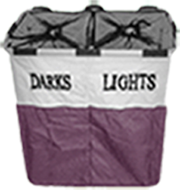

|
What's the big idea?
The Laundri-Map - Pocket Laundry Assistant is a mobile and desktop app that will aid users with laundry from their virtual closet using proven sorting methods, fabric care instructions and washer/dryer settings. Through interactive features and step-by-step guides for washing, drying and even folding, users can do laundry like a pro using a fraction of the effort. The Load Wizard and Cycle Manager are responsive UI features bundled in unique software giving users a place to easily inventory, tag, browse, select, sort, and plan each laundry load with customizable degrees of automation.
|
|
Describe the nearest player in your field.
Much research has been done into the main app markets showing a few useful applications. Typically, each app either lends information on a single topic like stains or fabric care labels, or provides tools like generic timers and laundromat finders. In-depth info is found in books and articles. |
How are you different from that player?
We tailor the program to the user's personal wardrobe, guiding them from the closet to the wash and back again. Users can customize features to fit their level of skill. The interactivity creates a fun and practical environment to direct and tutor users as needed during the process. |
|
How does this idea scale into a big business?
Customer loyalty increases greatly with open communication, so we will stay connected with our customers closely. Many exciting features are planned to be released with later updates. Testing and releasing our first app will provide insight into user?s needs and a launch pad for marketing new ideas. |
|
Why are you the one to run with this idea?
No question we love web design and mobile technology; we're majoring in it. But, starting our business has given us each a rare chance to encounter our own strengths, flaws, skills and gifts on a deeper level. Constantly forced with the decision to quit or commit, our fidelity is stronger than ever. |